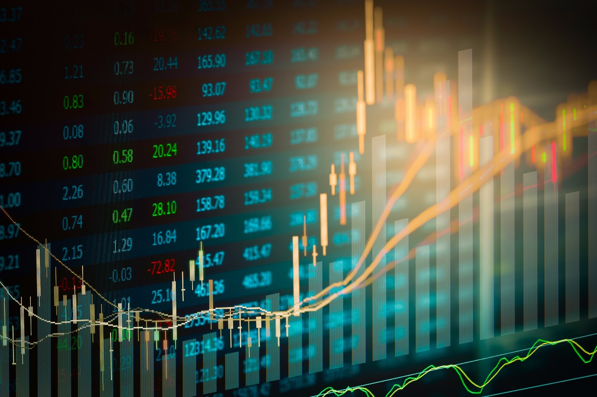

Arti
Dikutip dari laman KOMPAS.com, saham adalah bukti kepemilikan nilai sebuah perusahaan atau bukti penyertaan modal. Pemilik saham juga memiliki hak untuk mendapatkan dividen sesuai dengan jumlah saham yang dimilikinya.
Dengan memegang saham, maka individu maupun badan bisa mengeklaim kepemilikan pada suatu perusahaan terbuka. Artinya, pemegang saham berapa pun jumlah lembar yang dimilikinya berhak hadir dalam Rapat Umum Pemegang Saham (RUPS).